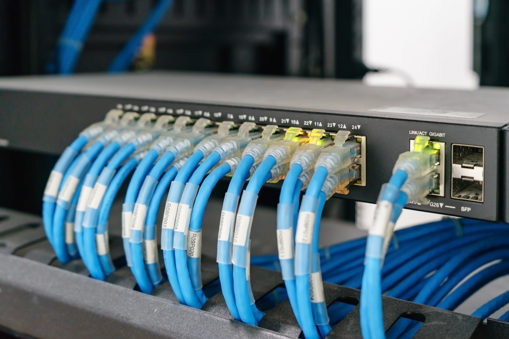

Local Area Network (LAN)
A Local Area Network (LAN), also known as a Structured Cabling System (SCS), forms the backbone of every modern business. It securely connects computers, servers, printers, IP phones, and network devices while providing reliable access to business applications and the internet.

Structured Cabling Systems
Professional CAT6 and CAT6A structured cabling designed for organized, scalable, and standards-compliant network connectivity.
MDF & IDF Infrastructure
Design and deployment of Master and Intermediate Distribution Frames for efficient network distribution across buildings.
Enterprise Connectivity
Reliable infrastructure supporting business communication, IP telephony, printers, servers, and connected devices.